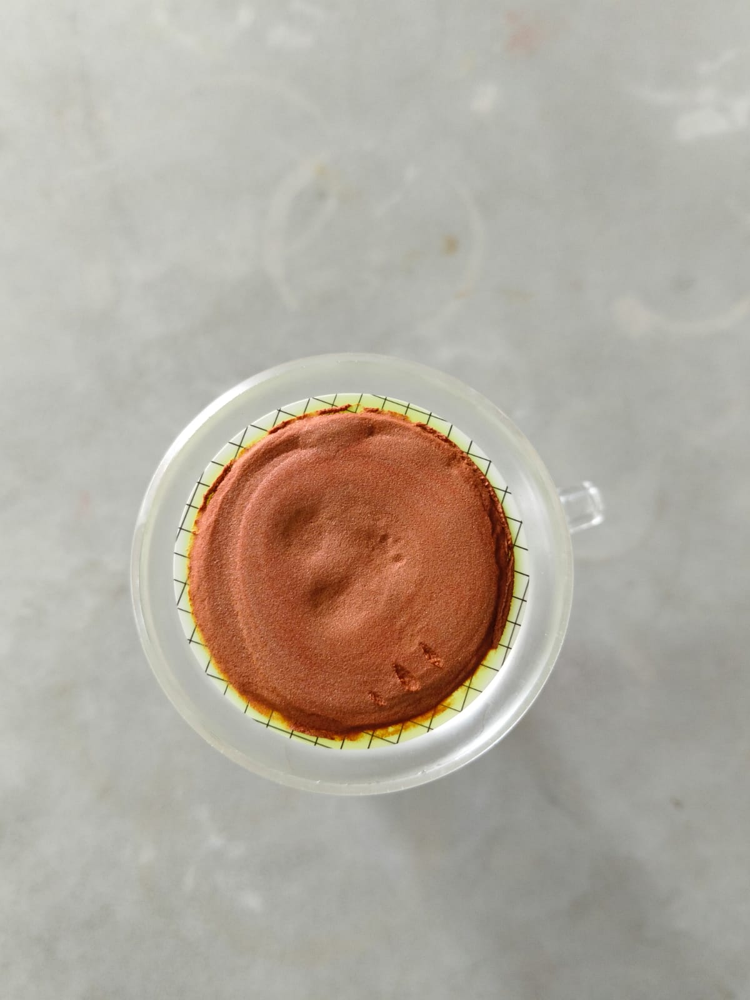
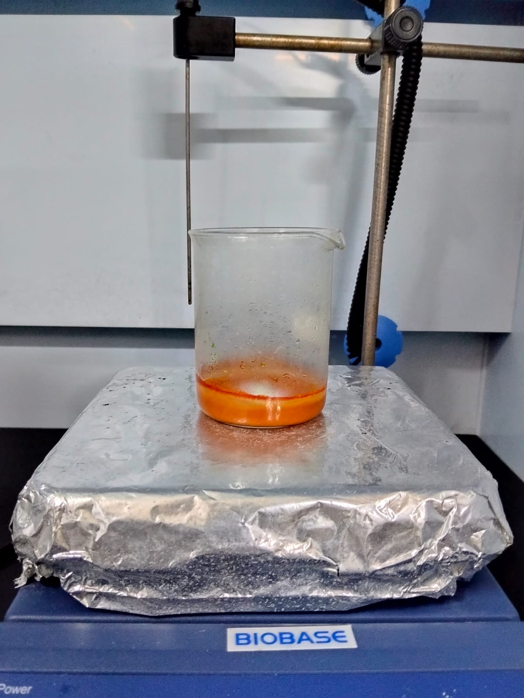
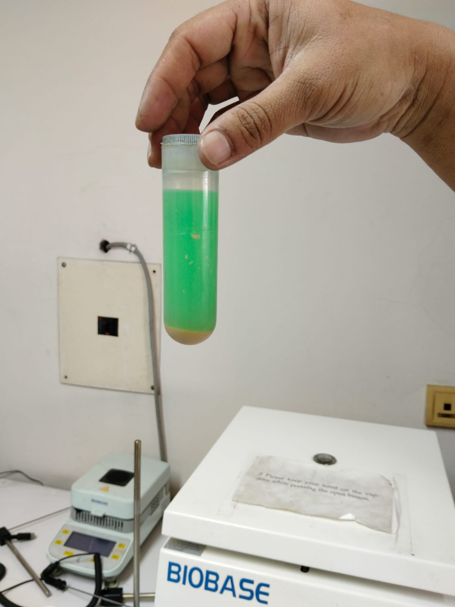

My research focuses on the synthesis and characterization of functional semiconductor materials. The work involves material preparation, structural analysis, optical characterization, and evaluation of electronic and photocatalytic properties.
The project combines experimental techniques with computational approaches including density functional theory (DFT) simulations for understanding material properties.

